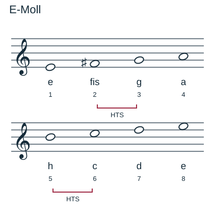
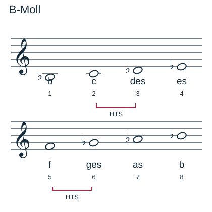
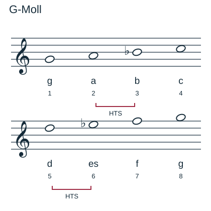
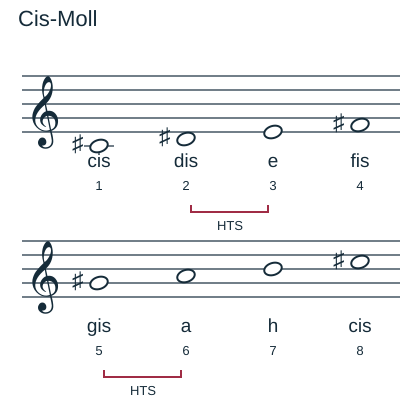
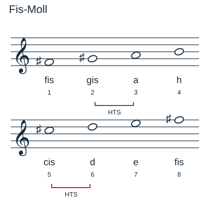

Natürliche Molltonleitern bauen
Mit einem KI-Tutor lernen
Ein KI-Tutor erklärt dir diese Seite und hilft dir bei den Übungen. Wähl deinen Assistenten:
Mit Claude öffnen Mit ChatGPT öffnen Mit Mistral Vibe öffnen
Du nutzt dein eigenes Konto beim Anbieter. Der Assistent ist kein Angebot von lernapps.net: lernapps liefert nur Inhalte und Übungen. Die Wahl gilt für alle Seiten, nur auf diesem Gerät.
Moll verschiebt die kleinen Schritte
- Natürliche Molltonleiter
Eine Tonleiter mit der Schrittfolge Ganz – Halb – Ganz – Ganz – Halb – Ganz – Ganz.
Merke
Bei natürlichem Moll liegen die Halbtonschritte zwischen 2–3 und 5–6. Hier übst du ausschließlich diese Mollform.
Auch hier beginnst du mit den Stammtonbuchstaben und prüfst dann die Abstände. „Dur klingt fröhlich, Moll traurig“ ist nur eine grobe Hörhilfe; für das Bilden zählt der Schrittplan.
Tonleiter-Baukasten
Aufgabe Nr. 1
Aufgabe Nr. 1
Baue E-Moll aufsteigend. Wähle für jede Stufe den passenden Ton.
Lösung
e – fis – g – a – h – c – d – e
E-Moll und B-Moll
E-Moll: e – fis – g – a – h – c – d – e. Die kleinen Schritte sind fis–g und h–c.

Die Zahlen zählen die Tonstufen; HTS markiert die Halbtonschritte. Vorzeichen stehen hier einzeln vor den betroffenen Noten.
Quelle: eigene Zeichnung. Lizenz: CC-BY-4.0.B-Moll: b – c – des – es – f – ges – as – b. B ist hier das erniedrigte H. Die Halbtonschritte liegen zwischen c–des und f–ges.

Die Zahlen zählen die Tonstufen; HTS markiert die Halbtonschritte. Vorzeichen stehen hier einzeln vor den betroffenen Noten.
Quelle: eigene Zeichnung. Lizenz: CC-BY-4.0.Weitere Molltonleitern

Die Zahlen zählen die Tonstufen; HTS markiert die Halbtonschritte. Vorzeichen stehen hier einzeln vor den betroffenen Noten.
Quelle: eigene Zeichnung. Lizenz: CC-BY-4.0.
Die Zahlen zählen die Tonstufen; HTS markiert die Halbtonschritte. Vorzeichen stehen hier einzeln vor den betroffenen Noten.
Quelle: eigene Zeichnung. Lizenz: CC-BY-4.0.
Die Zahlen zählen die Tonstufen; HTS markiert die Halbtonschritte. Vorzeichen stehen hier einzeln vor den betroffenen Noten.
Quelle: eigene Zeichnung. Lizenz: CC-BY-4.0.Übung
Übung
Drei Beispielaufgaben, jede mit ihrer Lösung:
Aufgabe Nr. 1
B-Moll: Wie viele Halbtonschritte liegen zwischen Stufe 4 (es) und Stufe 5 (f)? Antworte mit 1 oder 2.
Tipp
Natürliches Moll: Halbtonschritte bei 2–3 und 5–6.
Lösung
- Zwischen es und f liegen 2 Halbtonschritte.
Richtige Antwort: 2
Aufgabe Nr. 2
E-Moll: Wie viele Halbtonschritte liegen zwischen Stufe 7 (d) und Stufe 8 (e)? Antworte mit 1 oder 2.
Tipp
Natürliches Moll: Halbtonschritte bei 2–3 und 5–6.
Lösung
- Zwischen d und e liegen 2 Halbtonschritte.
Richtige Antwort: 2
Aufgabe Nr. 3
G-Moll: Wie viele Halbtonschritte liegen zwischen Stufe 2 (a) und Stufe 3 (b)? Antworte mit 1 oder 2.
Tipp
Natürliches Moll: Halbtonschritte bei 2–3 und 5–6.
Lösung
- Zwischen a und b liegen 1 Halbtonschritte.
Richtige Antwort: 1
Übung
Lösung
Richtige Antwort: 1. e unten, 2. fis, 3. g, 4. a, 5. h, 6. c, 7. d, 8. e oben
Die Halbtonschritte fis–g und h–c stehen bei 2–3 und 5–6.
Mehr dazu:
Übung
Lösung
2–3 und 5–6 richtige Antwort
Das ist der Schrittplan des natürlichen Moll.
3–4 und 7–8
Diese Halbtonstellen gehören zur Durtonleiter.
2–3 und 7–8
Die zweite Halbtonstelle liegt bei natürlichem Moll früher: nach Stufe 5.
Natürliches Moll: Ganz – Halb – Ganz – Ganz – Halb – Ganz – Ganz.
Mehr dazu:
Übung
Lösung
ges richtige Antwort
f–ges bildet den Halbtonschritt zwischen Stufe 5 und 6.
g
f–g wäre ein Ganzton. Natürliches Moll benötigt hier einen Halbton.
fis
Fis klingt wie ges, verwendet hier aber erneut den Stammton f. Stufe 6 benötigt einen g-Ton.
B-Moll lautet b–c–des–es–f–ges–as–b.
Mehr dazu:
Offene Aufgabe
Schreibe B-Moll aufsteigend ins Notensystem. Beschrifte jeden Ton und markiere die Halbtonschritte.
Eine gute Antwort enthält:
Lösung
B-Moll: b – c – des – es – f – ges – as – b. Die b-Vorzeichen gehören zu den Stammtonbuchstaben h, d, e, g und a. Die kleinen Schritte sind c–des und f–ges. Andere Oktavlagen sind erlaubt, wenn alle Töne stimmen.